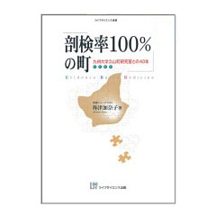

書評コーナー
「薬のチェックは命のチェック」で取り上げた書籍を紹介しています。
季刊誌26号より
剖検率１００％の町 九州大学久山町研究室との４０年
祢津加奈子 著／ライフサイエンス出版
「薬のチェック」を読んでいると「久山町研究」という言葉がよく出てくるので、どんな研究なのかを以前から知りたくて、 色々さがしているうちに出会った本がこの「剖検率１００％の町」でした。著者のことばから引用すると、 「かつて日本人の死亡原因の第一位は脳卒中でした。昭和３０年代の死亡診断書による調査によると、日本の脳血管疾患による死亡率 は世界でも圧倒的なトップを占め、しかも脳出血による死亡率が著しく高いのが特徴でした。 （中略）欧米に比較して、異常なほど脳出血の頻度が高かったのです。なぜ、日本だけが突出して脳出血比率が高いのかは、 欧米の研究者にとって大きな疑問だったらしいのです。しかしながら、日本の研究者たちはその疑問に対する資料を持っていなかった、 と言うよりもそれを裏付けるデータが日本には無かったのです」
日本にはデータがない、このことが久山町研究の発端となりました。本書を読み終えて思ったことは、 久山町研究は久山町住民の理解と協力が無くては出来ない研究であり、研究者たちが研究のための研究ではなく、 地域住民の健康を守るための研究を行ったことがこれを世界に誇れる物とし、 今なお時代に即したテーマを掲げながら続けられているのだということです。（し）
■ １５６頁 A５判/本体価格1,905円（税別）
ご購入はこちらから